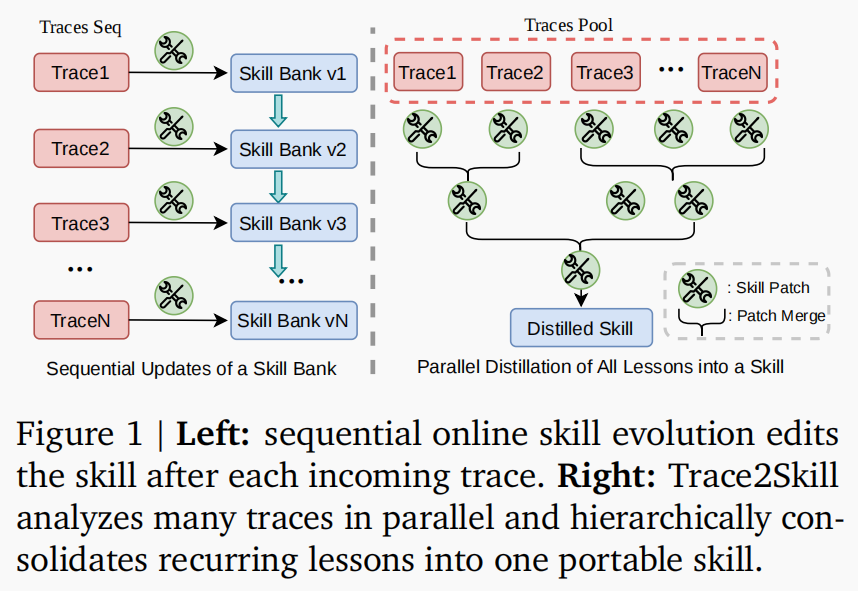
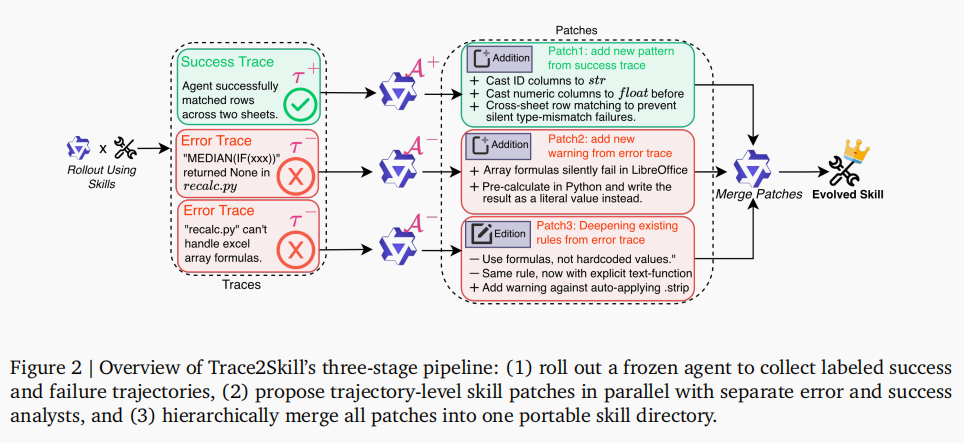
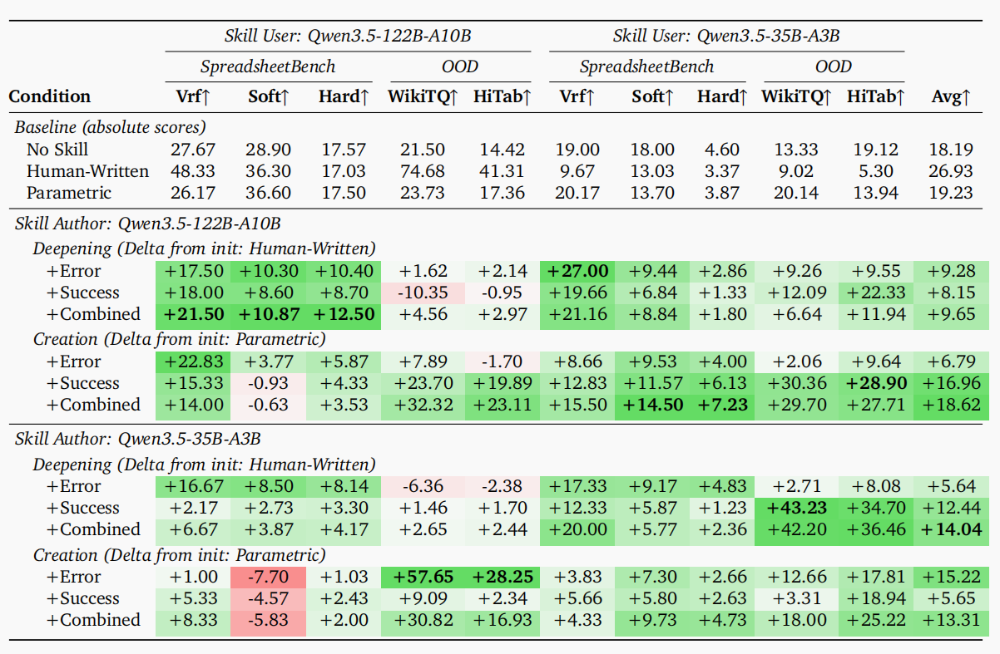
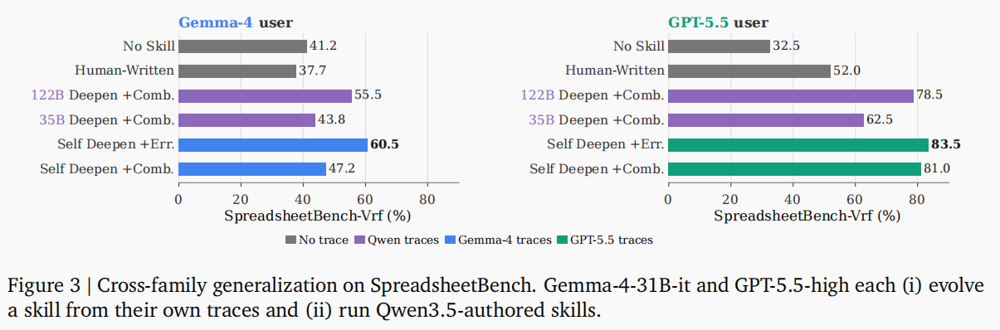

Trace2Skill: Distill Trajectory-Local Lessons into Transferable Agent Skills
论文信息：Jingwei Ni et al., ETH Zürich / University of Zurich / Peking University / Zhejiang University / Qwen Large Model Application Team, Alibaba, arXiv:2603.25158v5 (2026.06)。 论文原文 提出 Trace2Skill——一个把大量 agent 执行轨迹中的局部经验， 归纳压缩为可迁移技能目录的框架；既能深化人工技能， 也能从弱 LLM 草稿创建技能。

1. 摘要 (Abstract)
- 核心问题：LLM agent 越来越依赖领域技能（skills），但人工编写无法规模化； 仅凭模型参数生成的技能又常缺少真实执行中的操作陷阱、失败模式与可复用 workaround。
- 提出方案 (Trace2Skill)：从 agent 的成功 / 失败执行轨迹中并行提炼 trajectory-level skill patches，再通过层次化合并，把大量局部经验压缩成一个统一的、 可直接加载的技能目录。
- 支持两种模式：
- Skill deepening：从已有人工技能出发，用轨迹经验补全和深化。
- Skill creation：从弱 LLM 参数知识草稿出发，用轨迹经验创建可用技能。
- 实验范围：覆盖表格 / office 工作流、数学推理、视觉文档问答， 以及 PDF / PPTX / DOCX 等文档 agent 场景。
- 关键发现：演化后的技能不是训练轨迹的记忆，而是可迁移的 SoP（Standard Operating Procedures）：可跨模型规模、跨模型家族、 跨分布任务使用，无需参数更新或测试时检索。
2. 引言 (Introduction)
- 背景：agent 在文件操作、工具调用、专业工作流中需要可复用技能。 技能不仅包含领域知识，还包含流程、工具选择、验证步骤、失败规避等操作性知识。
- 人工技能的局限：人工技能可以显著提升强模型表现，但不一定对所有模型都有效。 论文指出官方 xlsx 技能提升了 122B spreadsheet agent，却会伤害 35B agent 在同一 benchmark 上的表现。
- 参数生成技能的局限：从模型参数知识直接生成的技能往往缺少真实执行中暴露的细节， 例如文件结构保留、公式重算、目标单元格验证、工具副作用等。
- 现有经验利用方式的问题：
- 检索式记忆：把每次轨迹中的经验存入 memory，测试时检索相关条目； 容易碎片化，且依赖检索质量。
- 顺序在线编辑：每来一条或一批轨迹就修改技能；技能质量依赖轨迹顺序， 后续编辑可能覆盖或扰动前序经验。
- Trace2Skill 的核心思想：像人类专家一样，先广泛阅读大量执行轨迹， 归纳反复出现的模式，再写成紧凑、可复用、可跨任务使用的技能文件。
3. 方法论 (Trace2Skill) —— 核心章节

3.1 问题形式化 (Skill and Problem Formalization)
- 技能定义：技能是一个人类可读目录：
[
\mathcal{S}=(M,\mathcal{R})
]
其中 \(M\) 是根文件
SKILL.md，\(\mathcal{R}\) 是辅助 references、 脚本或 assets。 - 根文件作用：保存广泛适用的程序性知识、工作流、注意事项与验证规则。
- 辅助文件作用：保存低频细节、确定性工具、脚本、长参考资料等。
- 目标：给定固定参数 agent \(\pi_\theta\)、初始技能 \(\mathcal{S}_0\)、 演化集 \(\mathcal{D}_{\text{evolve}}\) 与不相交测试集 \(\mathcal{D}_{\text{test}}\)，从演化集轨迹构造新技能： [ \mathcal{S}^{}=\mathcal{E}(\mathcal{S}0,\mathcal{D}; \pi_\theta) ] 使得测试集 pass rate 提升： [ \mathcal{P}(\mathcal{S}^{}};\pi_\theta,\mathcal{D}{\text{test}})> \mathcal{P}(\mathcal{S}_0;\pi\theta,\mathcal{D}_{\text{test}}) ]
- 约束：不更新模型参数；技能本身作为静态 artifact 直接用于 inference。
3.2 Stage 1：轨迹生成 (Trajectory Generation)
- 使用 ReAct-style harness：agent 读取任务、使用工具，产生中间推理、 工具调用历史与最终输出。
- 对演化集中的每个任务，固定 agent 使用初始技能 \(\mathcal{S}_0\) 执行一次， 得到轨迹 \(\tau_i\)，包含：
- query / task 描述；
- reasoning 与 tool-use history；
- 最终输出；
- 二元正确性结果。
- 轨迹集合 \(\mathcal{T}\) 被拆分为：
- 失败轨迹 \(\mathcal{T}^{-}\)；
- 成功轨迹 \(\mathcal{T}^{+}\)。
- 并行性：轨迹生成在演化集任务之间完全并行，为后续 many-to-one consolidation 提供宽覆盖证据。
3.3 Stage 2：并行 Patch 提议 (Parallel Patch Proposal)
- 每条轨迹交给一个 analyst sub-agent，独立提出对技能目录的 patch。
- 失败轨迹与成功轨迹分别使用不同 analyst：
- Error Analyst \(\mathcal{A}^{-}\)：从失败轨迹中定位因果失败机制， 并提出避免同类失败的技能补丁。
- Success Analyst \(\mathcal{A}^{+}\)：从成功轨迹中提炼可复用的 有效行为模式，并提出强化技能的补丁。
两类 analyst 的不对称设计
- Success Analyst 使用单次分析流程，识别成功轨迹中的通用行为模式： 哪些步骤、检查、工具选择、验证动作帮助 agent 做对任务。
- Error Analyst 使用 agentic ReAct loop，可以检查日志与产物文件、 对比 ground truth、尝试最小修复并重新验证。只有能被因果解释和验证的失败 才会转化为 patch，避免把日志表象误写成技能规则。
Patch 的性质
- 每个 patch 只来自一条轨迹，因此是 trajectory-local lesson。
- patch 要简洁、可执行、面向未来任务，而不是复述单个任务的答案。
- 最终得到 patch pool： [ \mathcal{P}=\mathcal{P}{-}\cup\mathcal{P} ]
3.4 Stage 3：Patch 合并 (Patch Consolidation)
- Stage 3 将所有 trajectory-level patches 合并成一个 coherent update \(p^{*}\)， 再应用到 \(\mathcal{S}_0\)。
- 合并采用层次化归并：每层最多把 \(B_{\text{merge}}\) 个 patch 合成为一个 patch，直到得到最终 patch： [ p^{(\ell+1)}=\mathcal{M}(\pi_\theta,\mathcal{S}_0, {p_1{(\ell)},\ldots,p_{B_{\text{merge}}}}) ]
- merge operator \(\mathcal{M}\) 的职责：
- 去重：合并多个 patch 中重复或近似的修改。
- 解决冲突：当 patch 对同一部分提出不同建议时，选择证据更强， 或综合成更好的表达。
- 保留独特 insight：不同失败 / 成功模式对应的非冗余经验都应留下。
- 保持简洁：避免把技能变成无结构的轨迹经验堆积。
- 确保编辑可应用：最终 patch 会被转成 diff-style edits， 并通过确定性 guardrails 应用到技能目录。
归纳泛化机制
- 多条独立轨迹反复提出相似 patch，说明它们不是偶然技巧， 而是该任务族的系统性属性。
- 合并器被明确要求偏向这类高频模式，把它们表达为一般原则或 SoP。
- 低频、细节型经验不一定进入
SKILL.md主体，而可放入 references， 避免主技能过载。
4. 实验 (Experiments)
4.1 实验设置 (Experimental Setup)
主要领域：Spreadsheet / 表格工作流
- 使用 SpreadsheetBench-Verified：agent 需要通过工具操作 xlsx 文件。
- 将 400 个样本分为：
- 200 个 evolution problems；
- 200 个 held-out test problems。
- 还评估完整 SpreadsheetBench（剔除 evolution problems）上的 Soft / Hard 分数， 以及 OOD 表格问答迁移：
- WikiTableQuestions；
- HiTab。
技能设置
- No Skill：无技能。
- Human-Written：Anthropic 官方 xlsx 技能。
- Parametric：仅凭 LLM 参数知识生成的 xlsx-basic 技能。
- Trace2Skill variants：
- +Error：只合并失败轨迹 patch。
- +Success：只合并成功轨迹 patch。
- +Combined：合并失败 + 成功轨迹 patch。
两种任务模式
- Deepening：从 Human-Written 技能出发，测试能否强化人工技能。
- Creation：从 Parametric 技能出发，测试能否从弱草稿创建实用技能。
模型设置
- Qwen3.5-122B-A10B 与 Qwen3.5-35B-A3B 同时作为 skill author 与 skill user。
- 采用 100% self-evolution：同一模型生成轨迹、提出 patch、合并并编辑技能。
4.2 主要结果 (Main Results)

论文 Table 1 汇总了 spreadsheet 结果，覆盖 skill author、skill user、 ID/OOD 任务与不同初始化方式。
- Human-Written 并非普适最优：人工 xlsx 技能显著提升 122B agent， 但对 35B agent 可能产生负面影响，说明技能需要考虑模型能力与操作习惯。
- Parametric 技能接近 No Skill：仅靠参数知识生成的技能不够具体， 缺少真实执行中的操作陷阱，因此难以稳定提升表现。
- Deepening 有效：从人工技能出发，Trace2Skill 能进一步强化 ID spreadsheet 性能，并在很多设置下迁移到其他模型规模和 OOD table QA。
- Creation 也有效：从弱 Parametric 草稿出发，轨迹蒸馏可以构造出 接近甚至超过人工技能的技能。
- +Combined 通常最好：失败轨迹提供纠错信号，成功轨迹提供有效流程信号， 二者合并通常带来最大平均提升。
- 跨模型规模可迁移：由 35B 或 122B 生成的技能都能在另一规模模型上 产生收益，说明技能不是某个模型内部状态的私有产物。
4.3 跨模型家族泛化 (Model-Family Generalization)

- 论文进一步测试 Gemma-4-31B-it 与 GPT-5.5-high。
- 两个设置：
- 各模型从自身轨迹深化 human-written xlsx 技能；
- 各模型直接运行 Qwen3.5-authored +Combined skills。
- 结果显示：Trace2Skill 技能不仅能跨模型规模迁移，也能跨模型家族迁移。
4.4 数学推理 (Math Reasoning)
- 将 Trace2Skill 应用于数学任务，检验领域无关性。
- agent 使用 ReAct loop，并可调用命令行 Python 解释器写代码、执行计算。
- 在 400 个 DAPO 问题上创建技能，在 100 个 held-out DAPO 问题与 AIME 2026 上评估。
- 结果：轨迹蒸馏出的数学技能提升 held-out DAPO 与 OOD AIME， 说明不是简单过拟合源任务。
- 在数学场景中，+Error 是最稳定的信号，跨 122B / 35B user 迁移较干净。
4.5 视觉文档问答 (Visual Question Answering)
- 使用 DocVQA：agent 需要回答文档图片（表单、表格、发票、信件、报告等） 上的问题。
- 只用 50 个 DocVQA 样本做 skill evolution，剩余 5,299 个样本作为 held-out test。
- 指标：ANLS 与 Accuracy（ANLS ≥ 0.5）。
- 结果：所有演化技能都超过 No Skill；+Combined 在同模型提升与 跨模型迁移上最强。
5. 分析 (Analysis)
5.1 核心设计对比 (Core Design Comparisons)
论文把 Trace2Skill 的三个关键设计分别与自然替代方案对比， 在相同 trace pool 与 execution harness 下做 apples-to-apples 分析。
5.1.1 并行合并 vs. 顺序编辑
- 顺序编辑：按轨迹到达顺序持续修改技能，后续分析依赖前面编辑后的技能。
- Trace2Skill 并行合并：每条轨迹独立提出 patch，最后一次性层次化合并。
- SpreadsheetBench 上，Parallel 在 122B 的所有指标和 35B 的 Vrf 上更好； 35B 的 Soft/Hard 上 Seq-B=1 略高。
- 但效率差距显著：Parallel 约 3 分钟，Seq-B=4 约 15 分钟， Seq-B=1 约 60 分钟。
- 结论：并行 many-to-one consolidation 基本保持或提升质量， 同时大幅降低墙钟时间，并避免顺序依赖。
5.1.2 整体技能 vs. 检索式记忆
- 对比 ReasoningBank-style retrieval：存储成功 / 失败轨迹中的 lessons， 测试时检索 top-1 memory。
- Trace2Skill 使用相同轨迹池，但把经验合并为一个静态技能。
- 结果：+Combined 在 SpreadsheetBench 上稳定优于 ReasoningBank。
- 解释：静态技能把多条证据归纳为全局 SoP，避免了测试时检索不到、 检索错，或 isolated memory 无法组合的问题。
5.1.3 Agentic Error Analyst vs. 单次 LLM 错误分析
图片占位符：论文 Figure 4，比较 agentic +Error 与 single-call +Error LLM 在 Avg 指标上的差异；agentic analyst 能检查 artifacts 并验证修复， 而 +Error LLM 只能读 execution log。
- 单次 LLM 错误分析只能从日志推断失败原因，容易把表层错误消息当作根因。
- Trace2Skill 的 Error Analyst 可以检查输入 / 输出文件、对比 ground truth， 执行最小修复并重新验证。
- 结果：agentic +Error 在大多数设置下比 +Error LLM 更好。
- 结论：对文件型 agent 任务而言，能检查 artifacts 并验证 fix 是产生 高质量失败 patch 的关键。
5.2 学到的 SoP (SoPs Learned)
- Many-to-one merge 会保留跨轨迹反复出现的操作原则，把它们写成 Standard Operating Procedures，而不是保存一次性技巧。
- 在 122B Deepening +Combined 的 323 个 map patches 中，四类 SoP 最突出 （单个 patch 可支持多个 SoP）：
- 公式重算与写回验证：写入公式后重新计算，并读取结果确认。
- 目标单元格验证：提交前确认目标 sheet、cell/range 与 answer position 正确。
- 显式 read-back verification：写入后重新打开输出文件， 检查目标值确实存在且正确。
- 结构编辑安全：删除行 / 列时采用不会造成索引偏移或文件结构损坏的顺序。
- 这些 SoP 是从大量成功 / 失败轨迹中自动归纳出来的，而非人工预先设计。
5.3 选择性 Patch 聚合 (Selective Patch Aggregation)
图片占位符：论文 Figure 5，展示 SpreadsheetBench-Vrf 上 greedy selective patch aggregation 与完整 Trace2Skill 聚合的比较；每条 greedy 曲线逐轮加入一个 验证集上局部最优 patch，但均低于完整聚合。
论文提出一个问题：如果 patch 质量参差不齐，是否只选择部分 patch 会更好？
- Greedy top-1：每轮选择验证集上局部最好的一个 patch。
- 早期上升快，但很快平台化，最终低于完整 Trace2Skill 聚合。
- 原因包括：patch side effects 导致一些原本正确的任务变错； 不同 patch 语义重叠，新增 patch 只是重复已有指导。
- Bayesian Optimization (BO)：直接搜索 patch 子集，能建模 patch 间互补和干扰。
- 在 +Error patch 上可进一步提升部分指标。
- 但成本很高：每个候选子集都要 materialize 成技能并在验证集上运行。
- 结论：patch 价值不是简单可加的，常具有组合效应；默认全量合并是成本和效果 之间更实用的选择，BO 更适合有明确验证预算和目标分布的场景。
5.4 更广泛应用 (Broader Application)
- Trace2Skill 还被应用到 Anthropic 官方文档技能族：PDF、PPTX、DOCX。
- 使用源任务轨迹深化已有官方技能，再在 held-out 目标任务上评估：
- PDF：VRDU Registration Forms → VAREX Flat，pass rate 从 76.9% 提升到 85.3%（+8.4 pp）。
- PPTX：TSBench training traces → deck-disjoint TSBench OOD， 72.5% → 88.8%（+16.3 pp）。
- DOCX：generated document-operation traces → OfficeBench DOCX holdout， 79.7% → 87.5%（+7.8 pp）。
- 说明 Trace2Skill 不局限于 spreadsheet，而是适用于多种文件 / 工具型 agent workflow。
6. 相关工作 (Related Work)
- Agent skills：技能把任务流程、领域知识和操作 guardrails 打包为可加载 artifact。现有研究表明，技能是否有效取决于其聚焦程度、更新程度和与 agent 能力的匹配度；过宽、过旧或不匹配的技能可能干扰 agent。
- Experience memory：Reflexion、Voyager、ReasoningBank 等系统把轨迹经验 存储为 memory，并在测试时检索。Trace2Skill 共享“经验中包含可复用结构”的前提， 但选择把许多局部经验归纳压缩成一个静态技能，而不是维护外部记忆或检索模块。
- Skill / policy evolution：AutoSkill、XSkill、EvoSkill、SkillGen 等系统从交互 或失败中演化技能 / policy。Trace2Skill 的关注点不同：它强调把一个模型的 轨迹证据压缩为可跨模型、跨任务、跨分布复用的静态技能目录。
7. 结论 (Conclusion)
- Trace2Skill 将大量 agent 执行轨迹压缩为一个可移植技能目录：先收集成功 / 失败轨迹，再并行提出轨迹级 patch，最后层次化合并成 coherent skill。
- 与顺序技能编辑、检索式经验记忆相比，Trace2Skill 更快、更整体， 也更适合把反复出现的失败模式和成功流程写成可复用 SoP。
- 实验表明，轨迹蒸馏技能可以跨模型规模、跨模型家族和 OOD 任务迁移， 并能覆盖 spreadsheet、数学、DocVQA、PDF/PPTX/DOCX 等多类场景。
- 局限在于：默认应用所有 consolidated patches；若要选择更优 patch 子集， BO 等方法可能有帮助，但验证成本随 patch 数和验证集规模快速增长。